キャラクター紹介
-
長谷川・アンディ
つけもの大好きで仕方ない外国人
-
つけものじいさん
よく入れ歯が落ちる自称つけもの博士
-
おじいさんの入れ歯
すごく臭い
- バクバク ガツガツガツ バクバクバクバク
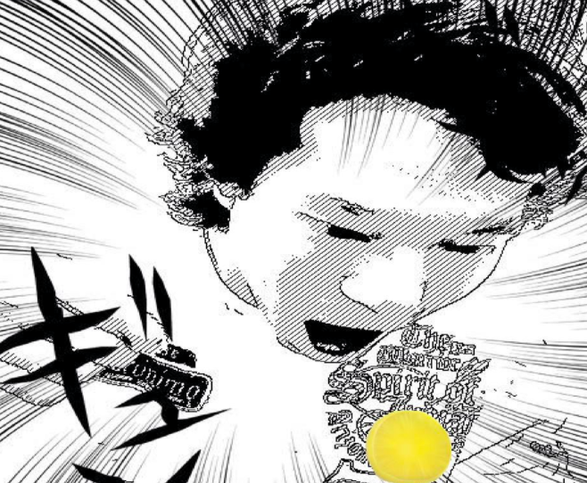
- つけものマジうめ〜〜〜〜〜
- おっと、旨すぎて全部食っちまった。つけ直すか。
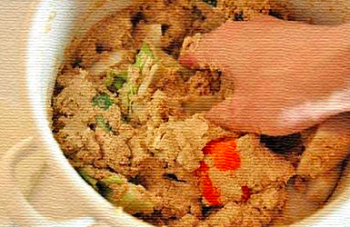
ぬちょぬちょぬちょぬちょ
- 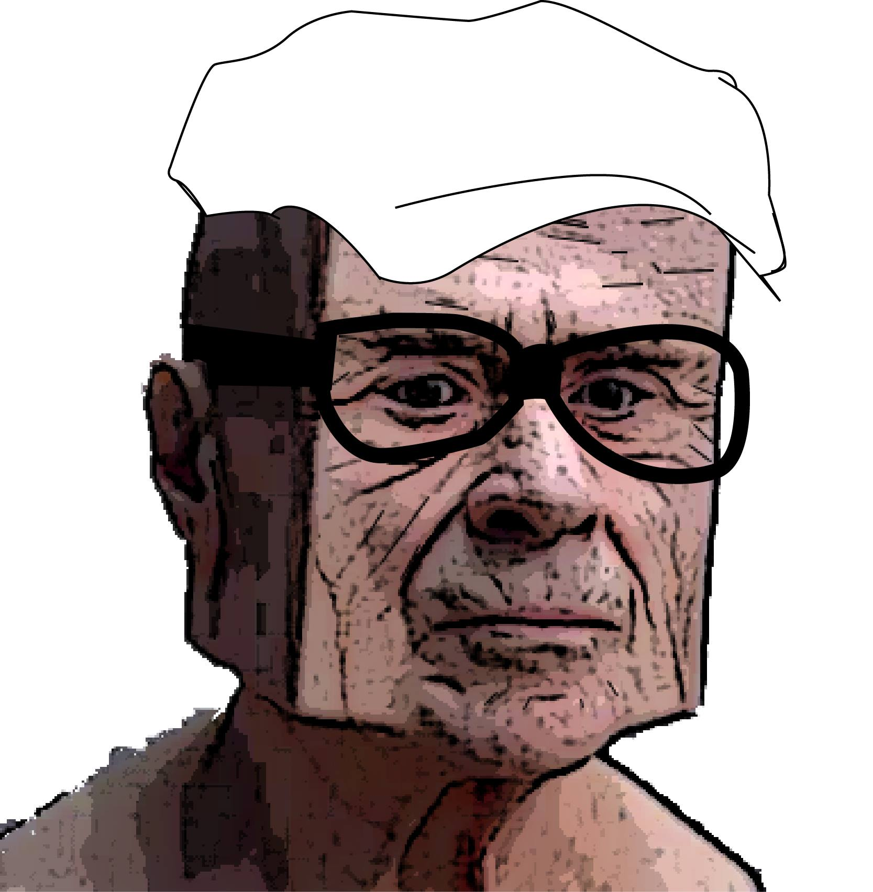
- まだつけもので消耗してるの ？
- ん？イケハヤか ？ あ、ちがった。なんだ、このくそムカつくジジイは ！ ？
- 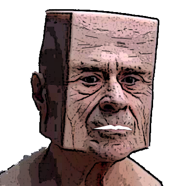
- じ、じじい…。ワシはつけもの博士じゃ。
- しわっしわ ！
- 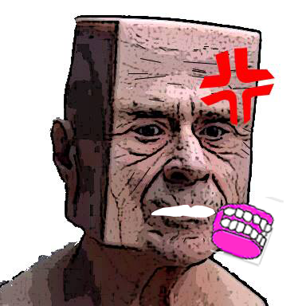
- だまれ ！
- ひいいいいいいいいいいいいいい。キモチワルイ…。
ガーーーーーン
- 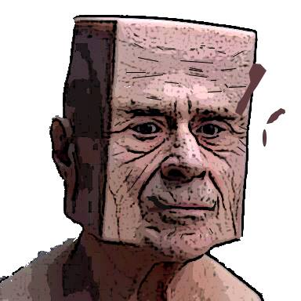
- …まあいい。これからの時代はこれじゃ！！
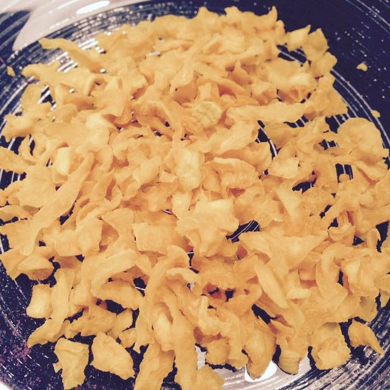
- なんですか ？ これは ？
- とりあえず食ってみろ。
- どうじゃ ？ 美味いだろ ？
- これはわしが作った新時代のつけものじゃ ！
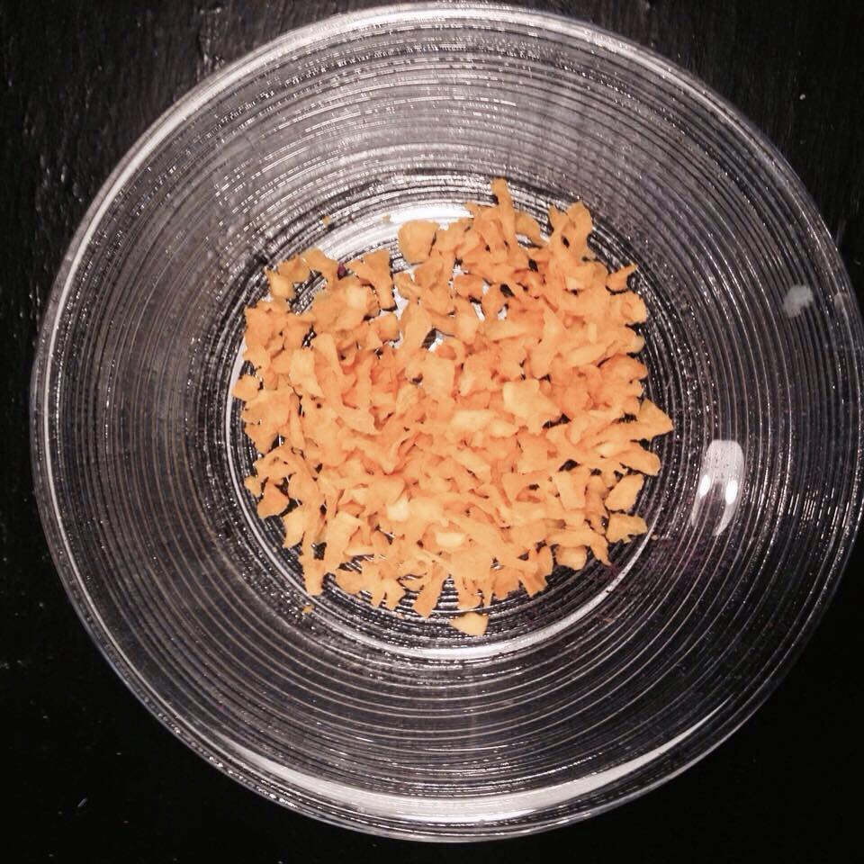
- 菜乾じゃ。
- サイカン ？ ！
- まあ簡単に言えば、つけものをフリーズドライ化させたものじゃ。
- え、これがつけもの ？ ！ ！ ！
- そうじゃ、水につければ元にもどる。
- す、すごい！ もうぬちょぬちょしなくて済むのか ！ ！
- さらにな、新時代のつけものはそのままでも食べることが出来るのじゃ。
- 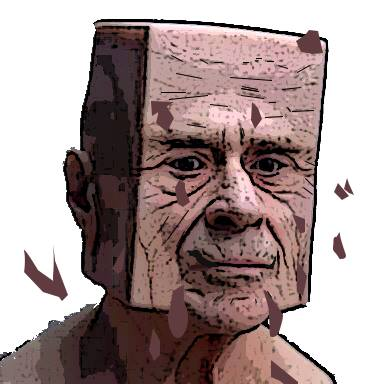
- ほれ、ほれ食ってみろ。
- あれ、今顔からなにか落ちませんでした ？
- 気のせいじゃ。食うんじゃ！
- ……パクパク ほんとだ、ほんとにつけものだ ！
- 博士 ！ もっとくれよ ！
- ほれ ！
- バクバク ガツガツガツ バクバクバクバク
- 美味い、美味すぎる ！ ！
- そうじゃろ、ところでお主、菜乾についてもっと知りたいか ？
- ま、まあ一応。
- そうか、そうか！これを読んでみろ。
-
うまみやたつお （ 俳優 ／ ◯宮辰夫漬物本舗 ）
著書 『 僕のパパの菜乾は世界一 』
- 息子よ、ありがとう。
- 長くて読みたくない。
- ……。まぁつまり菜乾はビタミンCが豊富で乳酸菌も入ってて健康になれる食材っていうことじゃ。わしみたいになれるぞ ！
- 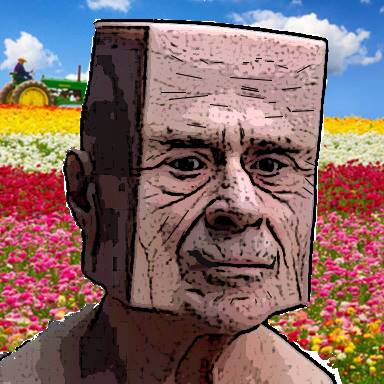
- ちなみにお主がさっき食べてたきゅうりのつけものは乳酸菌どころかビタミンCも1gも入ってない、世界一栄養がない食べ物としてギネス記録にのってるぞ。なんの取り柄もないな、ガハハハハハハ
- ひええええええええええええええ、うざいしキモい。
- まあ落ち着け、ここからが本題じゃ。実はな、宇宙でも和食ブームが起こっているんじゃ。
- 宇宙で ？
- 和食というのは世界でも健康に良いご飯として認識されているのじゃ。和食を食べて、長期滞在の際のストレスを和らげたいってことじゃな。宇宙の仕事は大変だからの。
- 和食にはすごい効果があるんですね ！
- だが一点だけ困ったことがあるんじゃ…。
- なんですか、困ったことって ？
- 今宇宙食に認定されている日本食というのは、これなんじゃが・・・。
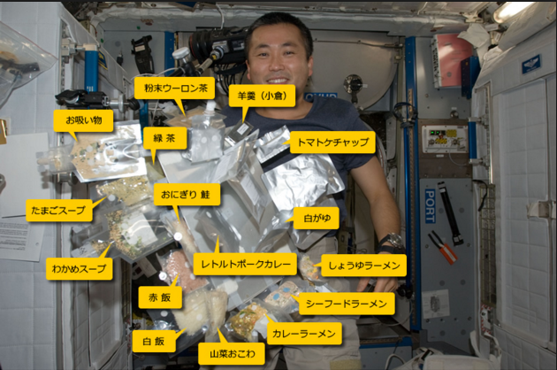
- あ ！ つけものがない ！
- そうなんじゃ。ところで衝撃の事実をもう一つ。つけものは世界無形文化遺産だってことを知っていたか？
- え、まじっすか ！
- だから宇宙食としてJAXAに認定されたら”宇宙で食べられる世界遺産”としてつけものが認知されるわけじゃ。
- え、でもすでに宇宙には和食があるんでしょ ？ それだと菜乾を飛ばしても意味ない気が…。
- うるさい！そんなこと分かってるわい！
- だから、菜乾の名前を世界無形文化遺産とかに変えればいいんじゃ！！！
- そんなことしたら何なのかよく分からなくなりますよ。理不尽すぎる。
- ……。
- 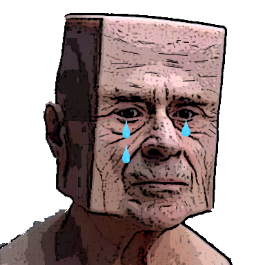
- 菜乾が宇宙食になってないのはおかしいんじゃ。
- え、急にどうした？！
- でも宇宙には日本人以外の国籍の人たちもいるわけだし、菜乾ってそんな認知されてないから…。
- 世界無形文化遺産じゃぞ！
- 菜乾は世界無形文化遺産なんじゃ！あのアンコール遺跡やマチュピチュ、グランドキャニオンと同じなんじゃ！
- そこまで言うと分からなくもないかも…、でもなんでそこまで菜乾にこだわるんですか？
- 実はな、わし菜乾なんじゃ…。
- 急なカミングアウト ？ ！
- 今まで宇宙食になるためにいろんなつけものが挑戦してきたんじゃが、保存期間が半年も持たずすべて却下になってしまったんじゃ。
- みんなわしに「後はお前に託した」と言って死んでいった…。
- そうだったんですね…。
- だからわしはそんなみんなの想いを宇宙に届けたい！
- はかせ…。
- だが、資金が足りないんじゃ…、宇宙に行くために資金が必要なんじゃ。
- わしは資金を集めるために身体の一部をここで売っとる。
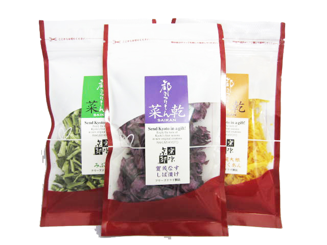
-
つけもの「菜乾」 | をいしおす
http://item.rakuten.co.jp/kyoto-morinoya/10000033/
- 自分の身体の一部を…、そこまで本気なんですね。ちなみにあといくら必要なんですか？
- あと27,000円じゃ。50袋分。
- 意外と少ない…。
- 今まで地道に貯めてきたからの…。
- あ、お前さっき食ったよな ！ 買うんじゃ ！ 50袋買うんじゃ ！
- え…。
- お前が買うんじゃ！
- 無理ですよ…、毎月の小遣い100円だし。全財産20円しかないよ…。
- ええい ！ そんな言い訳が通用すると思ってるのか ！
- 早く買え！
-
つけもの「菜乾」 | をいしおす
http://item.rakuten.co.jp/kyoto-morinoya/10000033/
-
つけもの「菜乾」 | をいしおす
http://item.rakuten.co.jp/kyoto-morinoya/10000033/
-
つけもの「菜乾」 | をいしおす
http://item.rakuten.co.jp/kyoto-morinoya/10000033/
- うわぁ。怖い。博士怖いよ…。
- そうか ！ 博士いいこと思いついたよ！
- ふむ、なんじゃ ？ 返答次第では命がないと思え！
- （怖すぎる…。）僕達のいる場所ってインターネット上じゃないですか？だからここで代わりに買ってくれる人を集めればいいんじゃないですか？
- ふむ。たしかにな。そうしよう。
- これを見てる皆さん、どうか博士、いや僕のために菜乾を買って頂けないでしょうか？
-
つけもの「菜乾」 | をいしおす
http://item.rakuten.co.jp/kyoto-morinoya/10000033/
よろしくお願いいたします。
- そんなんじゃ足りん！
-
「菜乾」万能とうがらし | をいしおす
http://item.rakuten.co.jp/kyoto-morinoya/10000033/
- 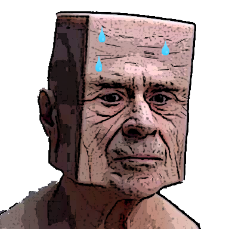
-
「菜乾」梅果肉 | をいしおす
http://item.rakuten.co.jp/kyoto-morinoya/10000033/
-
「菜乾」刻みすくぎ | をいしおす
http://item.rakuten.co.jp/kyoto-morinoya/10000033/
-
「菜乾」しば漬け | をいしおす
http://item.rakuten.co.jp/kyoto-morinoya/10000033/
-
「菜乾」たくあん | をいしおす
http://item.rakuten.co.jp/kyoto-morinoya/10000033/
-
「菜乾」みぶ菜 | をいしおす
http://item.rakuten.co.jp/kyoto-morinoya/10000033/
-
「菜乾」赤かぶら | をいしおす
http://item.rakuten.co.jp/kyoto-morinoya/10000033/
-
「菜乾」九条ねぎ | をいしおす
http://item.rakuten.co.jp/kyoto-morinoya/10000033/
-
「菜乾」白菜キムチ | をいしおす
http://item.rakuten.co.jp/kyoto-morinoya/10000033/
- 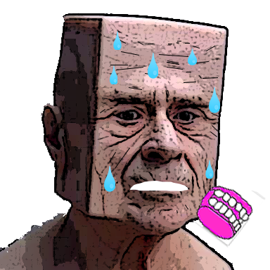
- ぜええぜええ、ハァハァハァハァ
- ボチャ
- …………。
- そこまで頑張らなくていいですよ。お歳寄りなんだから…。
- 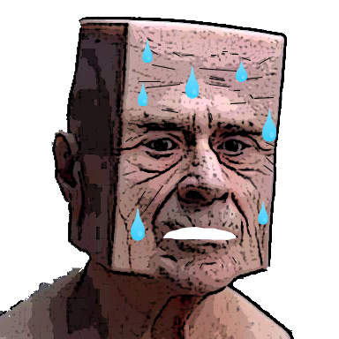
- だみゃれ！わしゃはわしゅはどうしゅても宇宙に行きゅたいんじゃ。ハァハァハァハァ
- 50袋分のゆーあーるえるを用意しにゃいと…。
- そんなことすると逆に買ってもらえませんよ！
- そうか…、じゃあここまでにしておこう。
- どうか、わしの菜乾を買ってください。おねがいします。